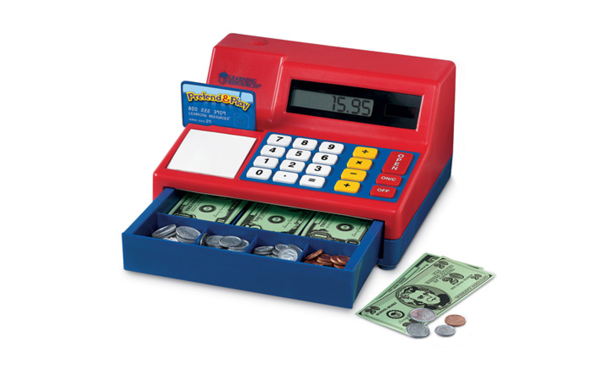
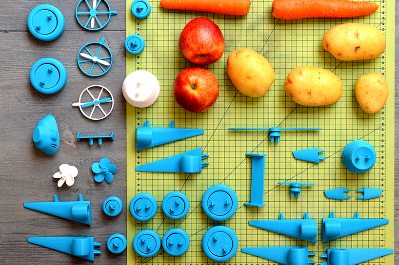
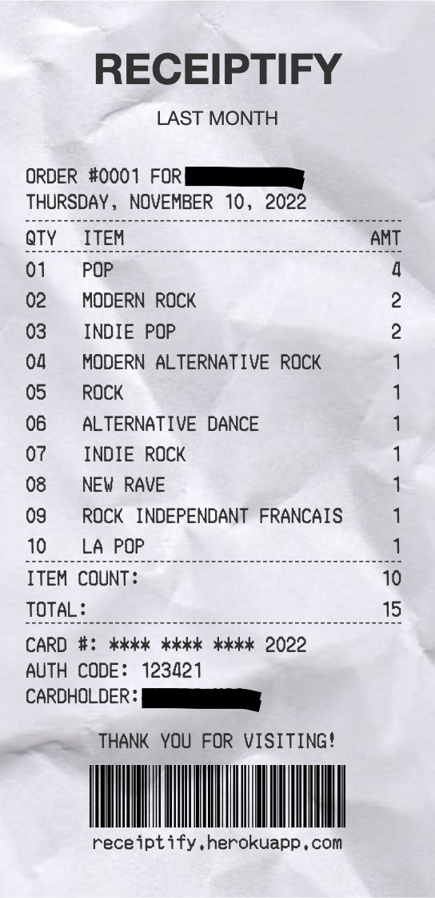

<div class="textcontainer">
<br></br>
<h3>Week 1: Final Project Proposal</h3>
<p class = "margin"></p>
<p class = "margin"></p>
Here are 2 potential (and in the works) ideas for my final project
<p class = "margin"></p>
<h4>Idea 1: Efficient calorie tracker</h4>
<p class = "margin"></p>
<h5><b>The main premise and goal of this idea is to form an effective piece of technology that helps those who want to gain weight, lose weight, gain muscle -- any type of weight change that requires a diet</b></h5>
<p class = "margin"></p>
<p class = "margin"></p>
<h6> - The project would consist of some type of physical device.</h6>
<h6> - I want to implement some type of timer system that allows for daily meals based on the users' input and schedule.</h6>
<h6> - The meals would be formed through some type of AI connection that customizes the user's meals through input data.</h6>
<h6> - Definitely want to incoporate AI into the design of the machine.</h6>
<h6> - I want to 3D print compartments in the shapes of different food categories (fruits, protein, etc.) with a marble system. The grams/amount of each category a person should eat per day will be accounted by marbles. Alternatively, having screens that represent the precise grams and foods a person should eat would also be helpful.</h6>
<h6> - I want to also utilize AI to make plans based on people's economic situations and time constraints. Once developed, this device can make meal planning much easier.</h6>
<h4><b>Reference Pics (3d prints and structure): </b></h4>


<p class = "hello world"></p>
<p class = "margin"></p>
<h4>Idea 2: Physical Music Translation</h4>
<p class = "margin"></p>
<h5><b>The main aim of this project is to create a fun way to understand lyrics all across the world. Music is a universal art, and lyrics are a crucial part to understanding the depth of a song. </b></h5>
<p class = "margin"></p>
<p class = "margin"></p>
<h6> - The project would consist of some type of physical device.</h6>
<h6> - The device would be able to print out a receipt-like paper of the imported lyrics translated into a desired language.</h6>
<h6> - Would use google translate technology to potentially incorporate [WIP].</h6>
<h6> - Printed out "receipt" would have lyrics of original song printed in a different language.</h6>
<h6> - The machine would have two different buttons: one to input original language and song file, and the other to click desired language.</h6>
<h6> - This project is still a work in progress that could have potential to become something fun and simply for aesthetics. Could potentially also be used to identify music genres and styles (like a physical shazam) </h6>
<h4><b>Reference Pics (3d prints and structure): </b></h4>

<img src="receipt printer.jpg" alt="Flowers in Chania" width="200"
height="150">
</div>